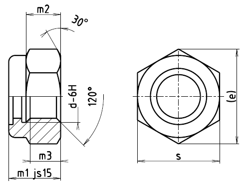

Příklad označení samojistné matice se závitem M10:
SAMOJISTNÁ MATICE ČSN 02 1492.25–M10
| Závit d | (M4) | M5 | M6 | M8 | M10 | M12 | (M14) | M16 | M20 | M24 |
| emin. | 7,7 | 8,8 | 11,1 | 14,4 | 18,9 | 21,1 | 24,5 | 26,8 | 33,5 | 39,9 |
| m1 | 5 | 5 | 6 | 8 | 10 | 12 | 14 | 16 | 20 | 24 |
| m2 | 3,2 | 3,5 | 4,5 | 6 | 7 | 9 | 10 | 11 | 15 | 16 |
| m3 | 2,9 | 3,2 | 4 | 5,5 | 6,5 | 8 | 9,5 | 10,5 | 14 | 15 |
| s | 7 | 8 | 10 | 13 | 17 | 19 | 22 | 24 | 30 | 36 |
| Hmotnost [g] | 1 | 1,4 | 2,4 | 5,1 | 10,6 | 17,2 | 26 | 34 | 65 | 100 |